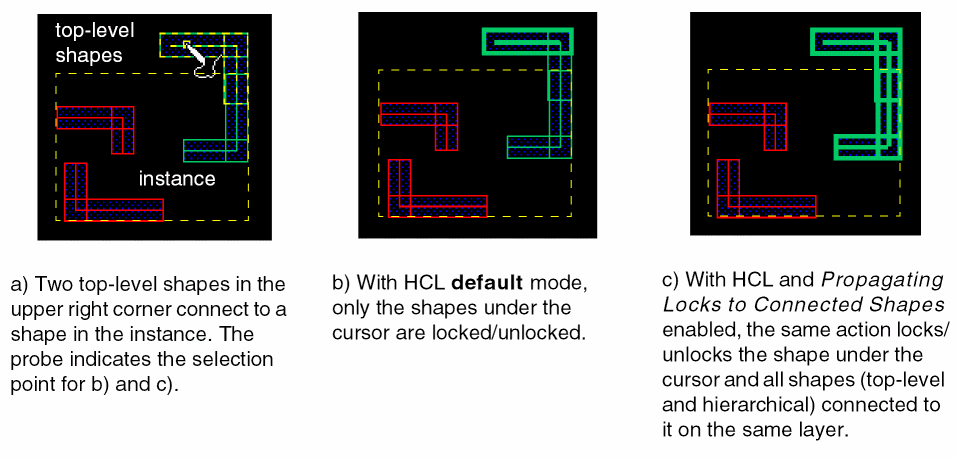

4
Coloring in Layout
There are several ways to color shapes in the layout. Shapes can be colored manually, as described in Interactive Coloring in Layout, or automatically Using the Multiple Patterning Color Engine. In track-based routing, shapes are colored based on their position relative to colored tracks, as described in Track-Based Coloring.
The following topics are included in this chapter:
- Interactive Coloring in Layout
- Using the Multiple Patterning Toolbar
- Using the Multiple Patterning Color Engine
- Track-Based Coloring
- Migrating from the Multiple Patterning Assistant
- Saving and Restoring Data
- Limitations
Interactive Coloring in Layout
Several Virtuoso tools can be used to color shapes and view coloring in Layout:
-
Palette Assistant
For more information, see MPT Support in Virtuoso Layout Suite L User Guide. -
Property Editor
For more information, see Interactively Setting Color on a Selected Object in Virtuoso Layout Suite L User Guide. -
Dynamic Selection Assistant
For more information, see Dynamic Selection in Virtuoso Layout Suite L User Guide. -
Multiple Patterning Toolbar
- Showing and Hiding Color
- Coloring Existing Shapes
- Color Shifting
- Recoloring Selected Colors
- Color Locking
- Removing Color from Shapes
For more information, refer to Using the Multiple Patterning Toolbar. -
Show Selection Info Toolbar
For more information, refer to Displaying Preselect and Selected Object Information in Virtuoso Layout Suite L User Guide. -
Virtuoso Space-based Router
For information on creating colored wires and buses, see Interactive Colored Routing in Virtuoso Interactive and Assisted Routing User Guide.
(message URL ../weuser/interactiveColoredRouting.html#firstpage)
The advanced coloring features are available only when the multiple patterning color engine is enabled and are dependent on the coloring method (interactive or managed).
| Feature | Interactive | Managed |
|---|---|---|
For more information, refer to Using the Multiple Patterning Color Engine.
Color Representations
Table 4-2 shows the default color representations for the first four masks. Shapes without color assignments are considered to be “gray” and are shown with no outline by default.


For information on how to change mask colors and outline styles, refer to Customizing Displayed Coloring.
Creating Colored Shapes
To add colored shapes to a design, follow the instructions in
Controlling the Visibility and Selectability of Colored Data
You can control the visibility and selectability of data by layer, color, and color state in the Layers panel of the Palette Assistant when MPT Support is enabled.
For more information, see
You can also show or hide color globally Using the Multiple Patterning Toolbar, as described in Showing and Hiding Color.
Inspecting Colored Data
There are several ways to inspect the color and color state of shapes:
- The Show Selection Info Toolbar (Window – Toolbars – Show Selection Info) shows the color and color state of preselect and selected objects.
-
The Property Editor (Edit – Basic – Properties [Q]) shows the color and color state of selected objects and vias in the canvas in the MPT Coloring box of the form.
For vias, the color and color state (represented by a locked or unlocked icon) for the metal and cut layers are shown.
-
The Dynamic Selection Assistant (Window – Assistants – Dynamic Selection) shows the color and color state for objects under the cursor in the canvas. This is useful in densely-populated areas of the canvas.

-
SKILL functions
The following SKILL functions query the color and color state of hierarchical (occurrence) shapes:
These SKILL functions can query the color for occurrence shapes:SKILL Function Description Returns a list of all the shapes in a given region and their effective colors.
Coloring Existing Shapes
There are several ways to change the color of shapes:
-
Use the Property Editor to change the color and color state of selected objects and vias in the canvas.
-
Use the Multiple Patterning Toolbar for the following:
- Color Shifting shifts the color for unlocked shapes.
- Color Locking locks and unlocks the color assigned to shapes.
- Recoloring Selected Colors updates color information for changed data or the entire design.
- Removing Color from Shapes removes color by layer or for the entire design.
- Use the multiple patterning color engine to color or recolor a design, as described in Using the Multiple Patterning Color Engine.
Color Locking
In layout, there are two types of color locks that can be assigned to a shape:
-
The color state for a top-level shape indicates whether the color is locked or unlocked. A
lockcolor state is also called a dbLock. For more information, see Color Attribute Locking. - A hierarchical color lock (HCL) on an occurrence shape assigns a locked color to the shape from a higher level of the hierarchy. For more information, see Hierarchical Color Locking.
By default, both of these methods operate on selected shapes. You can also operate on the selected shapes and shapes that are connected to them on the same layer, as described in Color Locking on Connected Shapes.
In addition, colors can be locked on shapes, vias, and blockages using SKILL functions, as described in Virtuoso SKILL Functions for MPT.
There is a special process for Color Locking Support for Synchronous Clones.
Color Attribute Locking
To lock the color on top-level shapes, you set the color state for the shape to lock using one of the following:
- Property Editor, as described in Interactively Setting Color on a Selected Object in Virtuoso Layout Suite L User Guide.
- Multiple Patterning toolbar, as described in Locking and Unlocking Colors.
The outline around the shape reflects the assigned color attribute, as shown in Color Representations.
Hierarchical Color Locking
To lock the color of shapes inside an instance, you must use hierarchical color locking (HCL). The outline around locked hierarchical shapes is the same as for top-level shapes, as shown in Color Representations. HCL is layer-based, not net-based. You can use the Dynamic Selection Assistant to view the color and color state of shapes under the cursor, as described in Inspecting Colored Data.
Hierarchical color locks are preserved when a Pcell is remastered and when Pcells are abutted. For more information, see Preserving Hierarchical Color Locks on Pcells.
Color Locking on Connected Shapes
By default, color attribute locking and HCL operate only on selected shapes. There are two ways to propagate locks to connected shapes:
- Use Propagate Locks in the Multiple Patterning toolbar, as described in Propagating Locks.
-
Set the appropriate options in the Multiple Patterning Options form to automatically propagate locks when the color engine is on:
-
The following options influence locking that is initiated from the Multiple Patterning toolbar (Lock Current, Lock Colorx, Lock All):
- Propagate Locks to Connected Shapes extends the color locking to unlocked shapes that are connected to the selected shapes on the same layer.
-
Propagate Locks to Connected Shapes with Override Lock on Connected Shapes extends the color locking to the locked and unlocked shapes that are connected to the selected shapes on the same layer. The Lock Current option lets you select the instance and locks the current shape. All shapes inside the instance are locked. The values specified by the enableHCLCreation
and enableHCLCreationOnPcellsenvironment variables are followed.
- This option influences locking while editing (for example, when adding, moving, or stretching a shape, or assigning a locked color using the Property Editor):
The difference between hierarchical color locking with Propagating Locks to Connected Shapes disabled (default) versus enabled is illustrated in the figure below.
Figure 4-1 Hierarchical Color Locking Default Versus Propagating Locks -
The following options influence locking that is initiated from the Multiple Patterning toolbar (Lock Current, Lock Colorx, Lock All):

Color Locking Support for Synchronous Clones
To change the color state of a shape in a synchronous clone, you must Edit In Place the synchronous clone.
For more information, see
Preserving Hierarchical Color Locks on Pcells
Hierarchical color locks operate on top-level and hierarchical (occurrence) shapes and are preserved when a Pcell is remastered and when Pcells are abutted.
Color Shifting
For layers with more than one mask, shapes can be assigned to a specific mask color. The mask for a shape can be manually shifted through the available masks using the Multiple Patterning toolbar, as described in Shifting Colors.

Shifting Colors on Instances
Virtuoso MPT supports instance color shifting by layer. The following table lists the layer shift types that are available:
Gray or uncolored shapes in an instance are not affected by layer shifts on the instance.
The following table shows the effective color for a shape on a three-mask layer based on its original mask color and the layer shift that is applied to the instance.
| Original Mask Color | noShift | shift1Shift | shift2Shift | fixedMask1 Shift | fixedMask2 Shift | fixedMask3 Shift |
|---|---|---|---|---|---|---|

Use the SKILL functions in the following table to initialize, set, retrieve, and clear the layer shift information on a cellview:
Example
cv = geGetEditCellView()
dbCellviewUpdateLayerShifts( cv )
I2 = dbFindAnyInstByName( cv "I2" )
I3 = dbFindAnyInstByName( cv "I3" )
shiftVals = list(list("Metal2" "fixedMask1Shift") list("Metal3" "shift2Shift"))
dbInstSetLayerShifts2( I2 shiftVals )
dbInstSetLayerShifts2( I3 shiftVals )
Sets the layer shift for Metal2 to fixedMask1Shift and for Metal3 to shift2Shift for instances I2 and I3 of the current edit cellview.
Pre-defined Setup Driven MPT Flows
You can now easily setup the MPT engine with pre-defined MPT flows. You can use SKILL functions, mptGetFlowSettings, mptGetFlowNames, mptSetFlow, mptDefineFlow, mptCheckFlow, and mptReportCurrentSettings to define the MPT flows.
Using the Multiple Patterning Toolbar
To show the Multiple Patterning toolbar, do one of the following:
- Choose Window – Toolbars – Multiple Patterning from the layout window menu bar.
- Access the Multiple Patterning workspace, as described in Using the Multiple Patterning Workspace.
The Multiple Patterning toolbar appears in the toolbar section of the Virtuoso workspace and can be moved in the workspace like other Virtuoso toolbars.
You use the Multiple Patterning toolbar for the following functions:
|
Viewing the Last Operation Status and Probing the Color Source |

Using the Multiple Patterning Workspace
The Multiple Patterning workspace can be accessed by one of the following methods:
- Choose Window – Workspaces – MultiPatterning from the layout window menu bar.
-
Choose MultiPatterning from the drop-down list box in the Workspaces toolbar.
The layout window is configured with the assistant panes and toolbars that are useful for MPT designs, as shown in the figure below. The Multiple Patterning toolbar is highlighted in red in this figure.
For information on workspaces and how to customize them, see
Showing the Active Multiple Patterning Toolbar Command
The status banner Cmd field in the bottom-right corner of the layout window shows the active command for post-select actions initiated from the Multiple Patterning toolbar. For information on these post-select actions, see Post-Select Locking and Unlocking and Removing Color from Shapes.
Turning the Multiple Patterning Color Engine On and Off
By default, the multiple patterning color engine is OFF.
When the color engine is off, coloring is not changed when shapes are added, moved, or changed. For more information, see Using the Multiple Patterning Color Engine.
To change the current state of the multiple patterning color engine:
When the Color Engine Is Activated
When the color engine is activated and outdated coloring is detected in the current cellview, the Automatic UpdateColor dialog box appears.

-
(Optional) Click the Always remember my choice checkbox.
When disabled, theupdateColorOnActivateenvironment variable is set toask, which causes this dialog box to appear each time any outdated coloring is detected in the current cellview, and the color engine is activated. When enabled, theupdateColorOnActivateenvironment variable is set according to the choice in the next step. -
Choose one of the following:
-
Yes
Updates colors through the hierarchy. If Always remember my choice is enabled, theupdateColorOnActivateenvironment variable is set toalwayscausing future color updates to occur automatically when the outdated coloring is detected and the color engine is activated. -
No
Color is not updated. If Always remember my choice is enabled, theupdateColorOnActivateenvironment variable is set tonever, You will need to manually update colors, as described in Recoloring Selected Colors. -
Cancel
Color is not updated. TheupdateColorOnActivateenvironment variable is set toask.
-
Yes
Showing and Hiding Color
By default, mask colors are displayed on visible layer-purposes.
To change the show/hide color setting:
Shifting Colors
To change the color of a shape or a set of shapes:
- Select the shapes in the layout.
-
Click the Shift Colors icon.
Shapes on layers with more than one mask will shift through colors, as described in Color Shifting.
For information on color shifting instances, see Shifting Colors on Instances.
Color Shifting Locked Shapes
By default, color shifting is not permitted on locked shapes. There are multiple patterning options for changing this behavior:
- Allow Shifting of Locked Shapes permits color shifting on individual locked shapes.
- Allow Shifting of Locked Shapes with Override Lock on Connected Shapes and Propagate Locks to Connected Shapes permit color shifting on connected locked shapes on the same layer.
For more information on setting these options before shifting colors, see Using the Multiple Patterning Options Form.
Recoloring Selected Colors
When you first open a design that has not been colored, or for which the color information is out of date, use one of the following methods to update color:
-
Recoloring Selected Shapes
Use this to recolor specific shapes (for example, shapes in a region). -
Recoloring Visible Area
Use this method to recolor the shapes in the visible area. -
Recolor All
Use this method when you load a design that has never been colored, is out of date, or was colored using an early software version. By default, designs are not automatically colored when opened.
To determine whether the color information is out of date, see Checking the Color Status of a Design.
Coloring can be slow for large designs. You can interrupt the coloring process by pressing the Ctrl + C keys.
Checking the Color Status of a Design
There are two ways to check the color status of a design:
-
Finding the outdated cellviews
Use the mptGetOutdatedDesigns SKILL function to get a list of the cellviews in the hierarchy for which the coloring is outdated. You can optionally include the outdated layers for each cellview in the returned list. -
Finding the up-to-date cellviews
Use the mptGetUpToDateDesigns SKILL function to get a list of the cellviews in the hierarchy for which the coloring is up to date.
Controlling the Recoloring of Read-only Cells and Pcells
When you are recoloring or updating color, you must consider how read-only cells and Pcells are treated. Although these can be recolored, the coloring cannot be saved.
-
If your design contains read-only cellviews:
- If there are read-only cellviews that are not fully colored, enable the Recolor readOnly cellviews option (this is the default setting) to permit recoloring of the read-only cellviews in memory. This will determine the colorability of the design, but the coloring in memory for the read-only cellviews cannot be saved.
- If the read-only cellviews are fully colored, you can disable the Recolor readOnly cellviews option. The existing color in the read-only cellviews will be used but those cellviews will not be recolored. This can reduce the recoloring processing time.
- If you wish to save the coloring for the read-only cellviews, you must first make them editable. You can make them editable in step 3 of the Recolor All procedure below.
-
If your design contains Pcells:
- By default, when the Don’t color Pcells option is disabled, Pcell shapes will be recolored in memory. This will determine the colorability of the design, but the coloring for the Pcells cannot be saved.
-
If you fully color the Pcell shapes directly in the Pcell code or using CDF parameters, you should enable the Don’t color Pcells option. Existing color in the Pcells will be recognized but the Pcells will not be recolored, thus reducing the recoloring processing time.To save Pcell coloring in the design, you must either use express Pcells or apply Hierarchical Color Locking to save the coloring at the instance level.
For more information on setting these options, see Using the Multiple Patterning Options Form.
Recoloring Selected Shapes
You can update the color of selected shapes by using the ReColor Selected option. To update the color of selected shapes, use the mptReColorFromShapes SKILL function. The color of the shapes connected to the shapes in the list will also be updated. Additionally, if the coloring method is managed, then the color of the shapes that are within the same-mask spacing of the shapes in the list will be updated, according to the clustering algorithm described in Automatic Color Shifting.
Recoloring Visible Area
You can update the color of shapes in the visible area using the ReColor Visible Area option.
Recolor All
By default, Recolor All will clear all colors, then color the entire design. This is useful for determining if the design is colorable. If your design contains read-only cellviews or Pcells, refer to Controlling the Recoloring of Read-only Cells and Pcells to ensure that these are handled appropriately.
-
Choose ReColor All from the Recolor Selected drop-down list.
The Recolor form appears.

-
You can select Current CellView, Outdated Cells, or all.
When you select the Current CellView option, the shapes in the current cellview are recolored.
The Outdated Cells option, instantiates an uncolored cell in a design that is already colored. This method runs faster than the all option, for cases when only part of the data is out of date because valid color information is not recomputed.
The all option recolors all the cells.
You can use thereColorGUIScopeenvironment variable to set and query the ReColor options.
When the Recolor readOnly Cellviews option is enabled, the default advisory shows the following:

- (Optional) If there are read-only cells in the hierarchy for which you want to save the coloring, click Open All for Edit to make them editable.
-
Click Run.
The design is recolored based on the coloring method setting. See Checking for Multiple Patterning Violations to determine if there are any colorability issues.
The equivalent SKILL function is mptReColor.
A progress bar appears if the Recolor All option or mptReColor option takes longer than a few seconds to complete. This provides a view of the progress of the recoloring task. It also gives you the choice to cancel the recolor command.
Locking and Unlocking Colors 
When using the Multiple Patterning toolbar, the type of color locking performed is dependent on whether the shapes have already been selected.
To lock or unlock the color on a shape or a set of shapes, or the entire design in the layout:
- Click the Lock Colors icon in the Multiple Patterning toolbar.
-
Choose the desired action from the drop-down list.

Action Shapes are preselected Shapes are NOT preselected Locks the selected shapes to the specified color using Color Attribute Locking.
Locks the selected shapes to the specified color as shapes are selected. For information, refer to Post-Select Locking and Unlocking.
Unlocks the color of shapes as shapes are selected. For information, refer to Post-Select Locking and Unlocking.
Locks all the colored shapes at the top level or at the current editing hierarchy level (top level), as described in Lock and Unlock All.
Unlocks all the colored shapes at the top level or at the current editing hierarchy level (top level), as described in Lock and Unlock All.
Propagates locks for connected shapes, same color groups, and net-based pre-colored shapes, as described in Propagating Locks. You can also propagate locks automatically when the color engine is on and you set certain Multiple Patterning Options, as described in Color Locking on Connected Shapes.
Locked shapes have a bold outline. For a description of the colors and color styles used to indicate locking, refer to Color Representations. For more information on color locking, refer to Color Locking.
Post-Select Locking and Unlocking
If no shapes were preselected, the cursor becomes a probe in the layout window, indicating that post-select mode is active. The status banner Cmd field at the bottom-right corner of the window shows the active command (Lock Current, Lock Color1, Lock Color2, Lock Color3, Lock Color4, or Unlock). Click shapes in the canvas to lock or unlock them.
-
Lock
Shapes at the current editing hierarchy level are locked by setting their color state. Shapes at a lower level of the hierarchy are set with a hierarchical color lock at the current level except when a lock is already set at the lower level. You can also prevent hierarchical color locking on sub-level shapes by setting theenableHCLCreationenvironment variable tonil. -
Unlock
Color attribute locks and hierarchical color locks at the current editing hierarchy level will be removed. If a shape is locked at a different level of the hierarchy, it will remain locked.
If visible and active shapes on more than one colorable layer exist under the probe, a pop-up menu appears. Choose the layer-purpose pair for the shape that you want locked or unlocked. Figure 4-2 shows an example of post-select locking in the layout.
Figure 4-2 Example of Post-Select Locking with Shapes on Multiple Colorable Layers
Lock and Unlock All
You can lock and unlock all colors for all layers or only specified layers.
-
Choose Lock All or Unlock All in the Lock Colors drop-down list of the Multiple Patterning toolbar.
The Lock All or Unlock All form appears.

- (Optional) To lock or unlock colors only on specific layers:
- Click OK or Apply.
For Lock All, uncolored shapes cannot be locked.
For Unlock All, top-level shapes with color attribute locks (dbLocks) become unlocked with their current color. Hierarchical color locks (HCLs) at the current editing hierarchy level will be removed.
The following example, mask1Color HCL is applied to the first and third shape of the instance, followed by Unlock All.

You can also use the mptLockAll and mptUnlockAll SKILL functions to lock and unlock colored shapes.
Propagating Locks
Lock propagation does the following:
- Color locked shapes are identified. Then, all the shapes connected to the locked shapes on the same layer are locked to the same color throughout the hierarchy, from the current to the bottom level.
- All shapes in critical nets that were pre-colored in schematic, as described in Net-Based Pre-Coloring Flow, will be locked to their current colors.
By default, lock propagation operates on all layers, but can be limited to specific layers.
-
Choose Propagate Locks in the Lock Colors drop-down list of the Multiple Patterning toolbar.
The Propagate Locks form appears.
- (Optional) To propagate locks only on specific layers:
- Click OK or Apply.
You can also use the mptPropagateLocks SKILL function to propagate locks in the entire hierarchy.
Removing Color from Shapes
To remove color from shapes in the layout:
- Click the Delete Colors icon on the Multiple Patterning toolbar.
-
Choose one of the following from the drop-down list:
-
Delete Color
- If the selected set is not empty, removes the locked and unlocked colors from the shapes in the selected set, including HCL-colored shapes in the selected instances.
-
If there are no shapes selected in the layout, the remove color cursor (arrow with three dots) appears when the layout window is active. The status banner Cmd field at the bottom-right corner of the window shows Delete Color. Click shapes in the current editing hierarchy level to remove their color.

-
Delete All Colors
The Delete All Colors form appears.
-
Delete Color
Using the Delete All Colors Form
In the Delete All Colors form:
-
Choose one of the following:
-
Delete – Unlocked colors
Removes the unlocked colors from shapes and vias at the current editing hierarchy level, and from instance shapes that were colored using hierarchical color locking (HCL). -
Delete – Locked and unlocked colors
Removes locked and unlocked colors from shapes and vias at the current editing hierarchy level, and from instance shapes that were colored using HCL.
-
Delete – Unlocked colors
-
Choose the layers for color removal.
-
All
Removes color from all layers. -
Selected Layers
Turn off All and show the list of Selected Layers by clicking the expand icon.Select the required layer from the Selected Layers list. Click and drag to select more than one consecutive layer. Hold down the
Ctrlkey and click to select/deselect a layer without changing the selection of the other layers. Hold down theShiftkey and click to select all the layers between, including the last selected layer and the currently selected layer.
-
All
-
Click OK or Apply.
The colors are removed from shapes as specified by the Delete All Colors form selections.
Turning Off the Color Engine When Removing Colors
If the color engine is on when you are Removing Color from Shapes, the shapes can be recolored by the color engine after the color is removed. When this condition exists, the Deactivate Color Engine dialog appears (before color is removed) that lets you turn off the color engine to prevent recoloring.
Using Stitch and UnStitch
Stitch is a method that can be used to fix color conflicts by breaking one shape into two overlapping “stitched” shapes, each assigned to a different mask.
UnStitch is used to remove stitches.

hideStitchingTools environment variable to nil.For detailed information on how to use stitch mode, refer to Using Stitch for Multiple Patterning Violations.
Converting Markers to Mask Colors
Some imported stream files create duplicate shapes to represent coloring, one for the shape and the other for the color marker shape. Before using the color engine, the imported data of this type must be converted using the mptMarkersToMaskColors SKILL function. The Multiple Patterning toolbar also provides a convenient way to perform this conversion.
enableMarkersToMaskColors environment variable:envSetVal("mpt" "enableMarkersToMaskColors" 'boolean t)
To convert the color markers to mask colors:
-
Click the Markers to Mask icon.
The Markers to Mask Colors form appears.
- Choose the Drawing Purpose.
- Choose the Mask1 Marker Purpose.
- Choose the Mask2 Marker Purpose.
- Choose the Mask3 Marker Purpose.
-
Choose the Mask4 Marker Purpose.
The purposes apply only to layers with more than two mask colors. - Select Lock Shapes to lock the color state on shapes.
- Select Remove Marker Shapes to remove the marker purpose shapes.
- Select Run Recolor All to recolor all cellviews.
- Select Save Cellviews to automatically save the modified cellviews in the hierarchy.
- Click OK.
Shapes are merged from the drawing purpose and the marker purposes through the hierarchy so that the shapes on the drawing purpose remain with the expected mask color assignment. You can also do the conversion using mptMarkersToMaskColors, described in Virtuoso Layout Suite SKILL Reference.
Checking Colors
You can use the options in the Checks drop-down list to perform color checks in the design. You can use the following options to check for potential color conflicts in the design:
Hierarchical Color Locking Check
As mentioned in Color Locking section, there are two types of color locks that can be assigned to a shape: the color state (dbLock) and hierarchical color locks (HCL).
While a shape can have only one dbLock, it could potentially have multiple HCLs applied from various levels of the hierarchy. A color conflict exists when there are multiple locked color assignments for a shape.
To check for potential color conflicts related to color locking:
-
Choose Hierarchical Color Locking Check from the Checks drop-down list.
The number of conflicting coloring locks is reported in the CIW. Annotation markers will appear in the canvas where the conflicts were found. -
Choose Window – Assistants – Annotation Browser to open the Annotation Browser and inspect the conflicts listed on the Misc tab in the MPT grouping.
Potential conflicts include:-
HCL in hierarchy over HCL in hierarchy
There are hierarchical color locks of different/same colors at different levels of the hierarchy for a shape. -
HCL over dbLock shape in hierarchy
There is a hierarchical color lock on a shape that is also locked in the cell master. -
HCL over shape in locked via
There is a hierarchical color lock on a shape that is part of a locked or partially locked via.
-
HCL in hierarchy over HCL in hierarchy
- Resolve conflicts by Removing Color from Shapes.
Resolving HCL Conflicts through the Annotation Browser
You can resolve HCL conflicts using Annotation Browser. You can resolve the errors one at a time or as a group.
- Select the conflict or group of conflicts in the Annotation Browser.
-
Select Fix from the context-sensitive menu.

After the fix, HCLs at the current editing level are cleared and the marker is deleted. For HCLs inside the hierarchy, a message is printed in the CIW specifying the resolution of the error. However, in this case, the marker is not deleted.
Violation Checks
You can perform color checks using the Checks option on the Multiple Patterning toolbar.
-
Click the Checks icon or choose Violation Checks from the Checks drop-down list.
-
Select the Type of color checks that you need to perform. You can select any or all the options: Color Shorts, Uncolored Shapes, Unlocked Shapes, or Colorability.
- Choose the Scope: Current Editable Cellview, Current Visible Area, or Area. The Current Editable Cellview checks the current cellview. This option is selected by default. The Current Visible Area checks area of the design that is currently visible. The Area checks the area that you select in the design.
- Select the Layers: All or Selected Layers.
The Verify Process Rules Summary is displayed in the CIW.
Methodology Compliance
The methodology compliance checker lets you verify that your design matches the desired coloring flow. It flags discrepancies between the design data and the multiple patterning flow setup. For example, it flags shapes having coloring information whereas based on the MPT setup they should have been not colorable.
The methodology compliance checker checks for the following:
- Colored LPPs: Flags any shape that is colored even if it is not part of the colored LPPs.
-
Hierarchical Color Locks: The hierarchical color locks are checked using the environment variables, enableHCLCreation
, enableHCLCreationOnPcells, globalColorShiftingPolicy, and globalColorShiftingPolicyForPcells.
A short summary of the discrepancies is reported in the CIW. A report is also created with details about each error at the current hierarchy level and inside the hierarchy. A marker is also created for each current level error. You can also view the marker in the Annotation Browser.
You can use the environment variable to specify the file name and location of the methodology compliance checker report. The environment variable, , is used to specify the maximum number of violations that are reported by the methodology compliance checker.
Viewing the Last Operation Status and Probing the Color Source
This section describes the options to view the last operation status and probing the color source.
Viewing the Last Operation Status
The color of the last operation status icon on the Multiple Patterning toolbar depicts the status of the last coloring operation. The colors depict the following:
- Blue: Indicates the last coloring operation was successful
- Red: Indicates the last coloring operation failed
- Yellow: Indicates that some operations were interrupted
When you click the red status button, temporary markers are generated on the violating shapes. You can click the marker on the shape to get more information about the coloring problem, as shown in the figure below.
Once you have analyzed the problem, you can press the Esc key to return to the normal mode and clear the temporary markers.
Probing Color Source
You can probe the color source and mark the color information on hierarchical color locks, clusters or layer shifts.
Probe Color Source
The Probe Color Source option displays the color information of the probed object. To display the color information for an object, choose Probe Color Source from the Last Operation drop-down list of the Multiple Patterning toolbar.
The following information is displayed:
The original shape information displays uncolored, colored, trackColored, netclassPrecolored, userLocked, and systemLocked. The userLocked or systemLocked are displayed at the level of the HCL. For locked via layers, this information is displayed at the level of the original shape.
When editing in place, the color information displayed is at the level of edit in place. An EIP suffix is appended at the level that is closest to the edit in place level. When the environment variable is set to t, the color information is displayed at the top-level with the EIP suffix appended at the edit in place level. If the environment variable is set to nil, the color information is displayed as if the probe is at the edit in place level. Also, no EIP suffix is appended.
Mark Color Info
You can use the Mark Color Info option to place markers where hierarchical color locks have been dropped and on instances with color shifts. The color shifts could be cluster or layer shifts.
To mark the color information:
-
Choose Mark Color Info from the Last Operation drop-down list of the Multiple Patterning toolbar.
The Mark Color Information form appears.
- Select the Type: HCL, Cluster Shift, or Layer Shift.
- Choose the Scope: Current Editable Cellview, Current Visible Area, or Area.
- Select the Layers: All or Selected Layers.
- Click OK.
The Mark Color Info Summary is displayed in the CIW.
Mark Variant Cells
You can use the Mark Variant Cells option to place markers on instances that will generate potential variants after XStream Out. It depends on the layerMap file and if unlocked, colors are streamed out.
To mark variant cells, choose Mark Variant Cells from the Last Operation drop-down list of the Multiple Patterning toolbar.
The variant cells summary is displayed in the CIW.
Mark doNotColor Cells
You can use the Mark doNotColor Cells option to place markers on instances with cells that have the mptDontColor property. These cells are skipped by the coloring engine during recoloring. The mptDontColor property only affects the recoloring of the master. It does ot prevent color shifting at the instance level. For example, there is an instance I1 of Cell1 in the top design. If you set the mptDontColor property on I1 or Cell1, and recolor the entire hierarchy, Cell1 master is not recolored. However, color shifting of instance I1 is not prevented.
Using the Multiple Patterning Color Engine
When the multiple patterning color engine is enabled, the coloring method specifies advanced methodologies that will be used to color shapes. Two coloring methods are available: interactive and managed. Features supported by these methods are described in the following sections:
To use the multiple pattering color engine, follow the procedure in Enabling the Multiple Patterning Color Engine for turning on the color engine and setting the coloring method.
Hierarchical Coloring of Connected Shapes
When the multiple patterning color engine is enabled, connected shapes form a cluster that is managed by the color engine. Color is automatically propagated on the layer through the hierarchy when shapes are added to the cluster, either by creating new shapes or by moving or stretching existing shapes.
When color is inherited from another shape, the color can be reversed using Undo. However, movement in the reverse direction will not automatically undo the color inheritance.
Color assignment is cost-based with priority given to fewer color changes when there is a conflict.
Automatic Color Shifting
When the color engine is enabled and the coloring method is managed, coloring is managed actively. As shapes and instances are added, removed, changed, or moved, those objects and neighboring objects will be colored according to the clustering algorithm. Automatic color shifting is performed on shapes, instances, and vias when objects are within same-mask spacing apart. Shapes that are greater than same-mask spacing from any another shape are not color shifted.
You cannot shift colors in a managed mode cluster if any of the shapes in the cluster is locked, except when Allow Shifting of Locked Shapes is enabled. For more information on setting this option, see Using the Multiple Patterning Options Form.
Figure 4-3 Double Patterning Cluster Coloring Example
For layers supporting three masks, the color engine will assign an unresolved color shape to mask3Color.
Figure 4-4 Multi-Patterning Cluster Coloring Example

Color Shifting for Cells
You can add the colorShiftingPolicy property to a cell master to override the shift types that the coloring engine can use to fix coloring conflicts.
colorShiftingPolicy "string" "cluster | layer | none"
-
cluster: Cluster references are created. -
layer: Only layer shifts are used on the instances of the cell. Cluster references are not created. -
none: Instances of the cell are not shifted. Cluster references are not created.
When the colorShiftingPolicy property is not set, the environment variable is used to control the color shift type.
To create the property on a cell master, use the following command:
dbCreateProp(cv "colorShiftingPolicy" "string" "none" )
The settings are set at the session or cell level. The property overrides the global settings when the property is set.
Some examples of usage of this property are listed below:
globalColorShiftingPolicy = "none"
CELL1 has the colorShiftingPolicy property set to layer.
In the above example, instances of CELL1 are layer shifted.
globalColorShiftingPolicy = "layer"
CELL1 has the colorShiftingPolicy property set to none.
In the above example, instances of CELL1 cannot be shifted.
Track-Based Coloring
To use track-based coloring, you must create track patterns that assign mask colors in the layout. Shapes will be colored based on their position relative to the tracks. The Virtuoso wire editor can snap wires to tracks.
There are two methods for creating colored tracks in the layout:
-
Track Patterns
Track patterns specify the routing layer, direction, and offset. The spacing between tracks is fixed. The color pattern can be customized. -
Width Spacing Patterns (WSP)
WSPs create a correct by construction non-uniform routing grid with pre-defined width and color constraints. This methodology supports the creation of a global grid and one or more regions, where the grid for each region can be different from the global grid for increased flexibility and productivity with complex designs. For information on creating grids using WSPs, see Using Width Spacing Patterns in Virtuoso Width Spacing Patterns User Guide.
To route wires on tracks with more than one mask per layer:
- Create colored track patterns using one of these methods:
- Turn on the multiple patterning color engine, as described in Turning the Multiple Patterning Color Engine On and Off.
-
Create wires snapped to tracks, as described in Creating Wires Snapped to Track Patterns in Virtuoso Interactive and Assisted Routing User Guide.
The guidelines for coloring shapes are described in Coloring Shapes that Overlap Colored Tracks.
Coloring Shapes that Overlap Colored Tracks
By default, shapes inherit the color of a track depending on the track type and position of the shape relative to the track:
-
For track patterns, the color of the track is inherited only if the centerline of the shape is aligned with the centerline of the track, as shown below.
-
For WSP tracks, the color of the track is inherited only if the centerline of the wire or pathSeg and its edges align with the track’s centerline and edges. For polygons and rectangles, color inheritance requires that the bounding box of the shape aligns with the track’s edges and that the minimal length for the bounding box in the x or y direction equals the width of the track.
To change the default behavior so that all the shapes overlapping a colored track inherit the track’s color, regardless of the alignment, set the environment variable to nil.
envSetVal("mpt" "trackColoringOnlySnappedShapes" 'boolean nil)
For WSP tracks, you can restrict the coloring inheritance to active colored WSP tracks by setting the environment variable to t.
envSetVal("mpt" "onlyCheckActiveWSP" 'boolean t)
Creating Colored Tracks Using Width Spacing Patterns
To set up colored tracks using width spacing patterns (WSPs):
- Follow the instructions in Preparing to Use Width Spacing Patterns to set the pattern-related constructs, purposes, and display packets in the technology file, and set the display resource file.
- Use the Track Pattern Assistant to choose the WSPs for the global area and regions in the canvas. For information, see Working with the Track Pattern Assistant.
Creating Colored Tracks Using Track Patterns
For each track pattern, you must specify the routing layer, track pattern direction, starting position with respect to the origin, spacing between tracks, and the total number of tracks. You can optionally assign a name to the track pattern, and customize the color pattern.
Color patterns can be specified using one of the following:
-
A mask color (
Rfor mask1Color andGfor mask2Color; uppercase and lowercase characters are accepted) -
An alternating color pattern (for example,
"RG"or"GR") -
A sequence of mask colors (for example,
"RGR") -
Repeating patterns given in compact notation "(pattern)^count"
where pattern is a sequence of mask colors and count is an integer representing the number of times the sequence is repeated. For example,"(RG)^3(R)^8"is equivalent to"RGRGRGRRRRRRRR".
To control the display of track patterns in the layout view, refer to Displaying Track Patterns in Layout.
To create colored track patterns:
-
Choose Create – P&R Objects – Track Patterns in the layout window.
Refer to Track Pattern Editor Form for information on using this form.
The following examples illustrate how track patterns are created:
- Defining a Track Pattern with Alternating Colors
- Defining a Track Pattern with a Color Pattern
- Defining Multiple Track Patterns for a Single Layer
Example 4-1 Defining a Track Pattern with Alternating Colors
This example creates horizontal tracks on the Metal2 layer, spaced 0.25 user units apart, with the first track offset 100 user units from the origin, as shown in Figure 4-5. The first track is mask1Color, the second is mask2Color, and so on, alternating colors ("RG") until 6 tracks have been created.
Figure 4-5 Illustration of a Track Pattern with Alternating Colors
Example 4-2 Defining a Track Pattern with a Color Pattern
This example creates vertical tracks on the Metal1 layer, spaced 0.2 user units apart, with the first track at the origin. The tracks are assigned to color masks in this sequence: mask2Color, mask1Color, mask2Color. The color track pattern is repeated until 8 tracks have been created, as shown in Figure 4-6.
Figure 4-6 Illustration of a Track Pattern with a Color Pattern
Example 4-3 Defining Multiple Track Patterns for a Single Layer
This example creates horizontal and vertical tracks on the Metal2 layer, spaced 0.1 user units apart with the first track offset 0.15 user units from the origin in both directions. The tracks are assigned to alternating color masks, starting with mask1Color for the horizontal tracks, and mask2Color for the vertical tracks. Sixteen (16) tracks are created in each direction, as shown in Figure 4-7.
Figure 4-7 Illustration of Multiple Track Patterns for a Single Layer

Displaying Track Patterns in Layout
To show or hide all the track patterns or track patterns by layer, follow the procedure in
Assigning Track Patterns to Nets
To route a net on specific tracks, follow the procedures in these sections:
Assigning Track Patterns to Constraint Groups
After creating the track patterns, assign them as constraints to a constraint group for track-based routing, in the same way you use spacing and width constraints to define spacing and width characteristics.
To assign track patterns to constraint groups:
-
Use the Process Rule Editor from the Constraint Manager to add track pattern constraints to a constraint group.
Refer to Virtuoso Unified Custom Constraints User Guide for information on accessing the Constraint Manager, starting the Process Rule Editor, creating a constraint group, and creating a new process rule.
Example 4-4 Assigning track patterns to a constraint group
- Follow the procedure “Starting the Process Rule Editor” in Virtuoso Unified Custom Constraints User Guide to start the Process Rule Editor.
- (Optional) Create a new constraint group.
-
In the Browser, click the name of the constraint group.

-
In the Create Process Rule field, choose Track Pattern from the drop-down list, then click the plus (+) button.
- With the track pattern selected in the Browser, click the Value tab at the bottom of the form.
- Choose the Layer for the tracks from the drop-down list.
-
In the trackPattern field, specify the name of the track pattern.
If more than one track pattern is needed for the layer (for example, when the layer has bidirectional tracks), all the track patterns must be specified in a single track pattern constraint. To do this, separate the track pattern names using a plus (+) with no added spaces (for example,M1_hor_1x+M1_ver_1x). -
Click Update.
The Browser is updated with the layer name and track pattern.

Applying Constraint Groups to Nets
After adding track patterns to a constraint group, you can now apply the constraint group to a net. The net will be routed on the specified tracks if you enable snapping to track patterns.
Example 4-5 Applying a constraint group to a net
-
In the Navigator assistant, select the net.

-
In the Process Rule Editor Apply Constraint Group section, choose the constraint group with the track pattern from the drop-down list, then click the Apply button.
The constraint group appears in the browser. Expand the constraint group to view the included constraints.

The net can now be routed on the specified tracks using the Virtuoso wire editor, as described in
Constraint Group Support to Define Colored LPPs
The coloring engine uses the constraint group with virtuosoMPTSetup as a constraint group definition in the technology file to determine the colored layer-purpose pairs. When a valid constraint group is found in the technology file, the colored layer-purpose pairs are defined according to the definition in the constraint group.
You can use the environment variable, , to specify the constraint group to be used to determine colored LPPs.
The validLayers constraint lets you restrict the colored layers. The example below shows the use of the validLayers constraint to limit the colored layers to one or more specific layer-purpose pairs.
The validPurposes constraint lets you define the colored purposes by including or excluding a set of purposes for a layer. The example below shows the use of the validPurposes constraint.
validPurposes constraint only applies to layers specified in the validLayers constraint. It does not apply to layer-purpose pairs specified in the validLayers constraint. This is the reason in the above example, only the drawing purpose is colorable and pin purpose is not colorable.
The excludeLPPs constraint lets you exclude LPPs from the colorable layer-purpose pair list derived from the combination of validLayers and validPurposes constraints.

In case the constraint group, virtuosoMPTSetup, is not found in the technology file, the layers with the number of masks more than one are considered as colorable layers.
The coloring engine uses the default colors specified in the layerDefaultColor constraint in the technology file defined in the MPT constraint group.

Migrating from the Multiple Patterning Assistant
You can access the Multiple Patterning assistant functions by using other Virtuoso tools and functions, as shown in the table below.
| Multiple Patterning Assistant Functionality | Alternative Method | For more information, refer to: |
|---|---|---|
|
Selection Info toolbar, |
||
|
Controlling the Visibility and Selectability of Colored Data |
||
Saving and Restoring Data
Coloring information is saved with the data OpenAccess multi-patterning format and restored when the data is reloaded.
Limitations
Virtuoso MPT is specifically targeted for interactive drawing of a layout and operates best on only a few hundred shapes or objects. Scripts that create a large number of shapes will run slowly.
If pre-coloring is not used and/or colors are not locked for interactive/batch coloring, then the displayed colors do not represent mask assignments. For these cases, sign-off and mask making should be done by a batch mode geometry processing tool such as Cadence Physical Verification System. These tools can be used to address issues such as balancing the densities of the masks.
Return to top